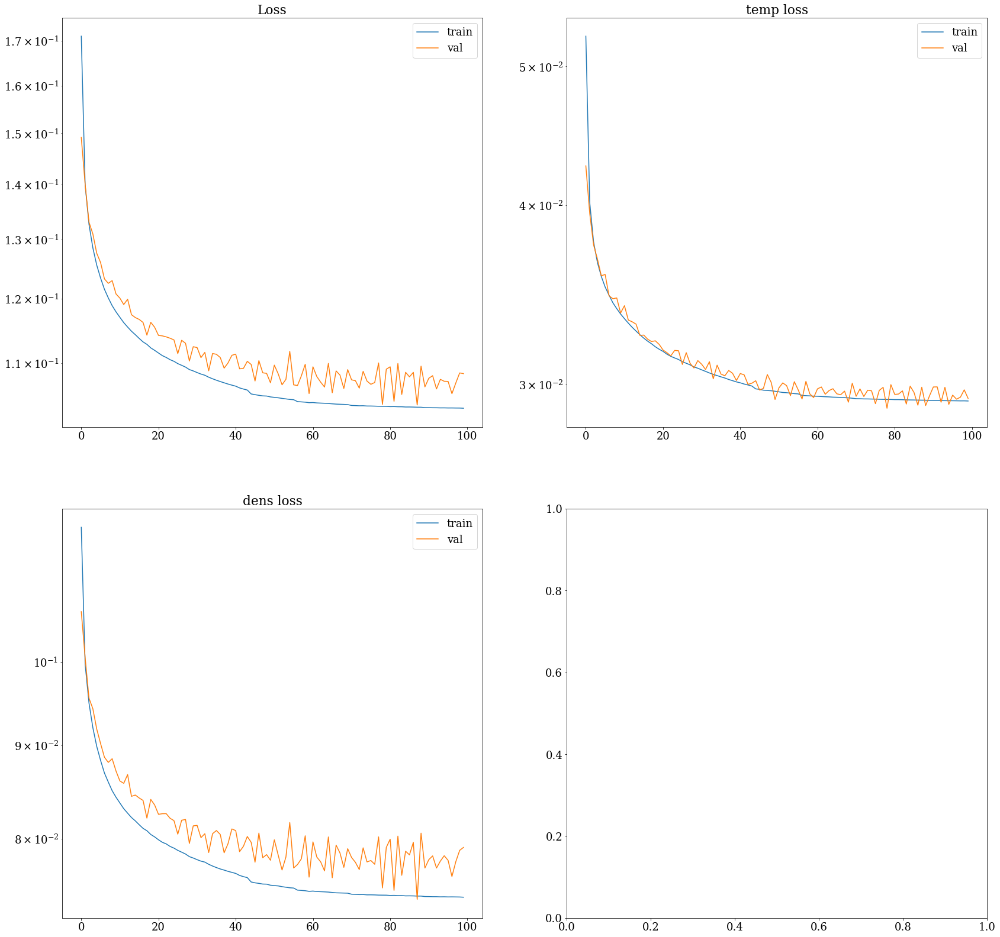

- actuator_names: ['pinj', 'curr', 'tinj', 'gasA']
- input_profile_names: ['temp', 'dens', 'press_EFIT01', 'ffprime_EFIT01', 'q_EFIT01']
- target_profile_names: ['temp', 'dens']
- scalar_input_names: []
- profile_downsample: 2
- model_type: conv1d
- model_kwargs:
- std_activation: relu
- hinge_weight: 0
- mse_weight_power: 2
- mse_weight_edge: 10
- mse_power: 2
- batch_size: 128
- epochs: 100
- flattop_only: True
- predict_deltas: True
- raw_data_path: /scratch/gpfs/jabbate/full_data/final_data.pkl
- process_data: True
- processed_filename_base: /scratch/gpfs/jabbate/data_60_ms_randomized_
- optimizer: adagrad
- optimizer_kwargs:
- shuffle_generators: True
- pruning_functions: [, , , , ]
- normalization_method: RobustScaler
- window_length: 3
- window_overlap: 0
- profile_lookback: 1
- actuator_lookback: 6
- lookahead: 3
- sample_step: 1
- uniform_normalization: True
- train_frac: 0.8
- val_frac: 0.2
- nshots: 12000
- excluded_shots: [['topology_TOP'], ['topology_OUT'], ['topology_MAR'], ['topology_IN'], ['topology_DN'], ['topology_BOT']]
- lookbacks:
- temp: 1
- dens: 1
- press_EFIT01: 1
- ffprime_EFIT01: 1
- q_EFIT01: 1
- pinj: 6
- curr: 6
- tinj: 6
- gasA: 6
- C_coil_method: 6
- I_coil_method: 6
- bt: 6
- dud_trip: 6
- ech: 6
- gasB: 6
- gasC: 6
- gasD: 6
- gasE: 6
- pfx1: 6
- pfx2: 6
- shotnum: 6
- time: 6
- sig_names: ['temp', 'dens', 'press_EFIT01', 'ffprime_EFIT01', 'q_EFIT01', 'temp', 'dens', 'pinj', 'curr', 'tinj', 'gasA']
- profile_length: 33
- mse_weight_vector: [ 1. 1.13970822 1.28854816 1.44651984 1.61362324 1.78985837
1.97522522 2.16972381 2.37335412 2.58611616 2.80800993 3.03903543
3.27919265 3.52848161 3.78690229 4.05445469 4.33113883 4.61695469
4.91190229 5.21598161 5.52919265 5.85153543 6.18300993 6.52361616
6.87335412 7.23222381 7.60022522 7.97735837 8.36362324 8.75901984
9.16354816 9.57720822 10. ]
- runname: model-conv1d_profiles-temp-dens-press_EFIT01-ffprime_EFIT01-q_EFIT01_act-pinj-curr-tinj-gasA_targ-temp-dens_profLB-1_actLB-6_norm-RobustScaler_activ-relu_nshots-12000_ftop-True_03Nov19-01-54
- steps_per_epoch: 988
- val_steps: 247
- model_path: /home/wconlin/run_results_11_2/model-conv1d_profiles-temp-dens-press_EFIT01-ffprime_EFIT01-q_EFIT01_act-pinj-curr-tinj-gasA_targ-temp-dens_profLB-1_actLB-6_norm-RobustScaler_activ-relu_nshots-12000_ftop-True_03Nov19-01-54.h5
image_path
sheet_path
